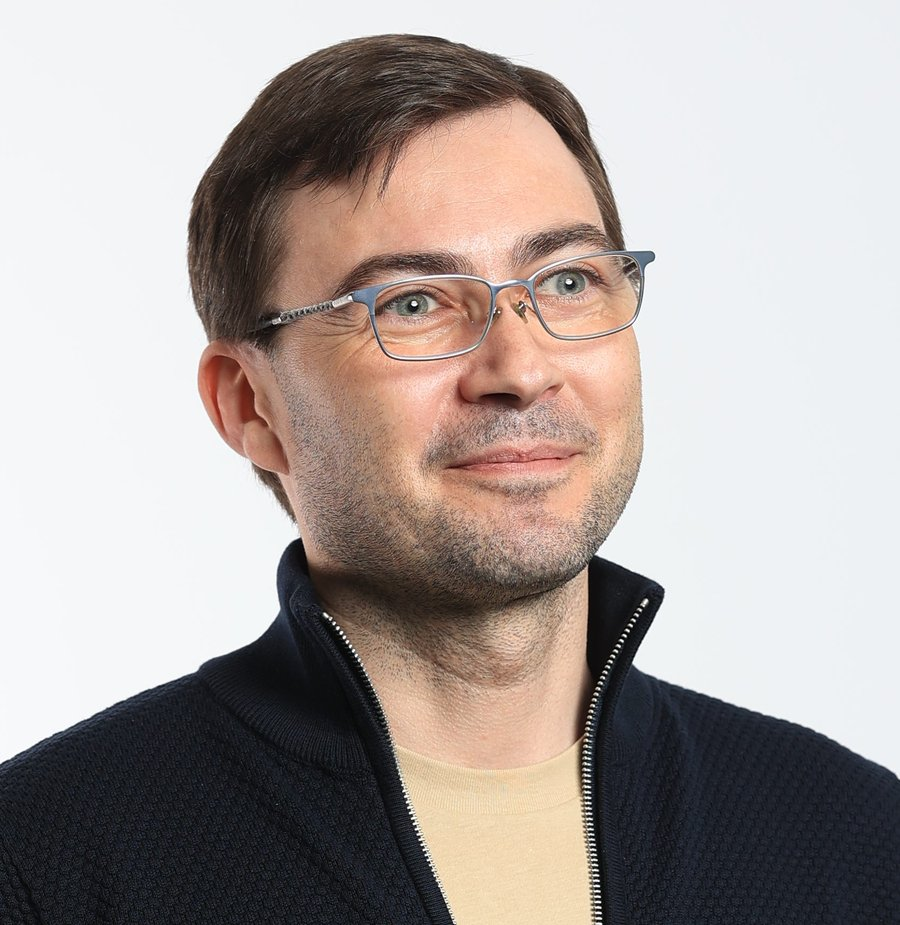

Strategic leader who builds high-performing Agile teams from the ground up, bridges engineering complexity and business goals, and drives delivery across fintech, industrial automation, and enterprise platforms. Equally fluent in the boardroom and the codebase.

My greatest achievement is that I manage to overcome failure — two decades of leading teams across industries has given me resilience, perspective, and the ability to make sound decisions even under pressure with incomplete information.
I build teams, processes, and delivery cultures. I've introduced Agile from scratch, coordinated global cross-functional teams across Japan, the Netherlands, Germany and the US, and served as the bridge between engineering execution and business strategy — translating complex technical realities into clear direction stakeholders can act on.
I understand high-level objectives and communicate them across teams — and the other way around: I understand execution struggles and find viable solutions. Objective in risk assessment, I work well under pressure. Somehow perfectionist — I see the details others miss.
Available since December 2024 and open to Software Development Manager, Engineering Manager, Delivery Manager, or Team Lead roles — particularly in fintech, enterprise SaaS, or cloud-native platforms. Based in Bucharest; open to remote or relocation discussions.